Final Write Up
Summary
The Cache Coherence Simulator simulates a multiprocessor snooping-based system that uses the MESI cache coherence protocol with a split transaction bus. The simulator models a multiprocessor system, where each processor has a variable sized L1 4-way associative LRU cache. The simulator can also model transactional memory.
Using the simulation, we have compared the performance of several Contech traces across a range of different parameters, such as the cache size, the maximum number of outstanding requests on the bus, and the number of cycles it takes to receive data from memory. Performance was measured using the total number of cache hits, cache misses, as well as total clock cycle count, and the number of messages sent by each processor onto the shared interconnect.
The code for the cache coherence simulation is located in the backend/CacheCoherence directory. The code for the transactional memory simulation is in the backend/CacheCoherence/tm directory.
Background
This project uses Contech memory traces, or taskgraphs, for each parallel program. Using these memory traces, we were able to simulate a program running on a multiprocessor machine, where each thread in the taskgraph is scheduled to a single core with an L1 cache. The simulator will output the relevant statistics and measurements - the cache hits, total clock cycles to completion, and number of messages sent on the interconnect - for a given trace.
The simulator keeps track of several statistics as it iterates through the parallel memory trace. These statistics include cache hits, cache misses, the total number of clock cycles it takes for the program to complete, and the number of messages each processor sends on the shared interconnect.
These measurements were recorded as several parameters, including the cache size, the maximum number of outstanding requests on the bus, and the number of cycles it takes to receive data from memory, were adjusted.
The simulator is also able to model transactional memory. Using a simple transactional memory trace that we created, the simulator is able to emulate the behavior of a hardware transactional memory system with a MESI cache coherence protocol. The simulation results were then compared against results from the same program where the atomic operations were replaced with locks.
Approach
The simulator is constructed to reflect the hardware, where there are three major components of the software simulator: the processor cache, the shared interconnect, and the system simulator. The input to the system is a Contech taskgraph, which the simulator uses to output the cache coherence statistics for the given trace.
The Contech Taskgraph
The simulator, written in C++, uses the given input taskgraph to create a list of memory accesses from each core. Special cases are made during runtime to handle locks and barriers and thread synchronization, that included a map of locked elements.
The Processor Cache
We started with a simple single core cache simulator, similar to what we created in the 15-213 cachelab assignment, that was provided in the contech github repository (Simple Cache) by Professor Brian Railing. Using the list of memory accesses from the taskgraph, the simulator sends each individual processor the memory requests for each processor, and must mediate between each processor requesting data on the bus. Each memory request is initially separated into 8 byte requests of either reads or writes (a mem copy is considered to be both). The processor cache locates the cache line that corresponds to the given address, and check the state that the cache line is in. Depending on the state and type of operation, the processor sends a request to the split bus interconnect, according to the MESI protocol.
The Shared Interconnect: A Split Transaction Bus
The bus takes the request, and saves it on the request table. If the request table is full then the bus will return with a NACK, and a retry will have to occur. Once the request has been held for a given time period (modeling how long loading data from memory takes), the bus notifies all of the other processors about the request and each processor updates its L1 cache accordingly. The bus then returns to the simulator letting the requesting cache know that it can change its own state accordingly. The bus returns the necessary information to all of the processors, such as information about ACKS, or the address. It also has three lines, shared, dirty, and snoop-pending, that each processor checks. The processor used the information in the shared line to accordingly know which state the cache line should be in.
The System Simulator
The system simulator is responsible for reading the taskgraph, mediating requests between each of the processor caches, keeping track of statistics and measurements. The simulator uses a round robin bus arbitration for each of the processor caches, while memory is always given the highest priority.
Transactional Memory
In order to simulate lazy optimistic transactional memory on top of the MESI split bus, we first had to build a simple memory trace that mimicked transactions between . Each transaction had a read and write, simulating depositing and withdrawing from a bank, as an example. Upon a commit, each memory instruction that was supposed to have occurred gets sent to the split bus, if needed, according to MESI protocol. When it is time for the bus to broadcast the message, each processor checks if any of the values in their read/write set conflict with the committed data according to the lazy optimistic protocol. If so the given processor must abort and restart its transaction by clearing its read/write set and beginning the operations again.
Results
Number of cache hits for caches of different size
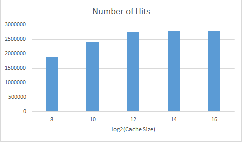 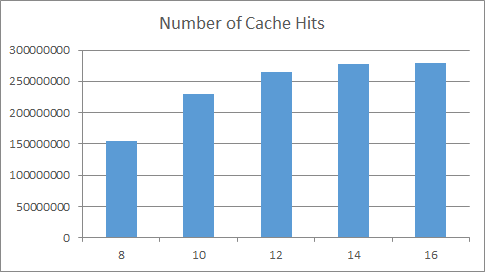 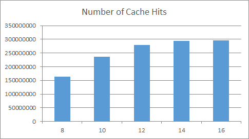
We varied the size of the cache, until the entire data set fit in cache. When the graph levels out the entire data set fits in cache and we no longer see the effect of evictions due to overflow. We used this to better understand the later graphs.
Length of time to complete a taskgraph
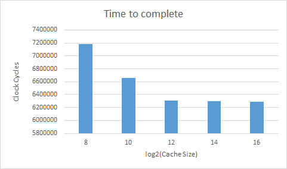 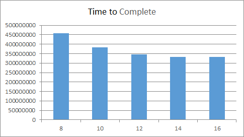
As can be expected, with a bigger cache there are more hits, less misses, and less evictions leading to a shorter completion time.
Number of messages sent on the split transaction bus
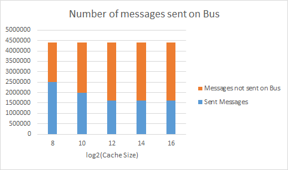 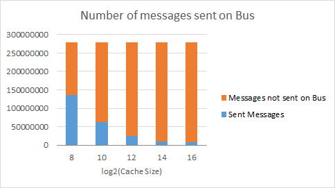 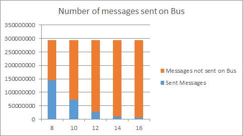
These graphs show the number of messages sent on the split transaction bus based on MESI protocol. The orange part of the bar is all of the messages that did not have to be sent on the bus, for example if the cache line was already in the exclusive or the modified state. If the cache does not currently have a certain value in the cache, it would by default have to send a message on the bus to all of the other caches, requesting permission for it. With a bigger cache, there are fewer evictions, so fewer messages have to be sent on the bus in this case.
Number of times a cache had to invalidate
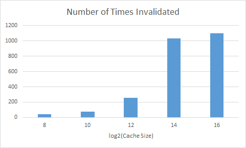 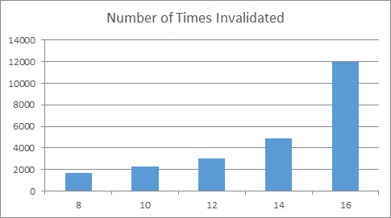 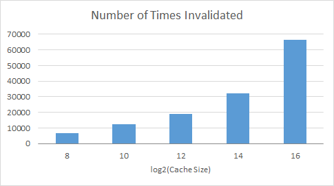
These graphs show the number of times a processor had to invalidate its cache line because a different processor requested something that was in that specific cache line. It was a surprise to see that with a bigger cache there had to be so many more invalidations as compared to smaller caches. However, this does make sense, with a bigger cache more of the values are being stored and held on too, so there is a greater chance that the value any given processor needs is being stored in a different cache.
Transactional Memory
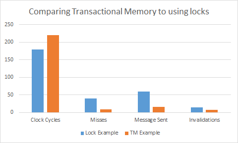
This graph is really interesting because it shows the difference between a trace that we created using transactional memory as compared to how that program would have run with if it was just using locks. For this example we used the bank example from class. Each processor can deposit or withdraw from a bank, each transaction has a read or write. The bank account is located at a specific example, in this case we decided to put all of the addresses on the same cache line in order to show more clearly the effect of using transactions. As you can see from the graph, the lock example has more misses, messages being sent, and invalidations. Essentially, at almost every memory request a cache line will have to be flushed to memory to allow a different processor to get the data; because of each invalidation caches do not hold on to values in the exclusive state, so more messages will have to be sent, and there will clearly be more misses. What is most interesting about this graph, however, is that even though there are clearly more misses, messages sent, and invalidations using locks, the lock example actually still runs faster. This is because, constantly having to restart memory transactions really slows down the completion of transactions.
An important thing to note about the above transactional memory example, is that we are comparing a trace that we created, which only looks at the memory usage of transactions being performed, to a Contech taskgraph. The Contech taskgraph includes extra memory instructions from the overhead of the lock example, this comes from initialization. To build on this project in the future, we will create a more robust memory trace for transactional memory, which would be more comparable to a Contech taskgraph.
References
We used Contech documentation, as well as Contech task graphs as traces for our simulation.
General Contech info
Contech is a compiler-based (specifically LLVM) instrumentation, designed to efficiently record the execution trace, memory accesses, and parallel interactions of a program. The instrumentation has been tested across programs written in C, C++, and Fortran, as well as those using pthreads, OpenMP, and MPI.
Contech is documented in the wiki.
Authors and Contributors @bprail is the software architect of this project. Contributions have also been made by @ehein6. Additional components have been provided by @caparrov.
Publication Contech has appeared in the journal, ACM Transactions on Architecture and Code Optimization.
Contech appeared as a tutorial at IISWC 2015.
List of work by each Student
Equal work was performed by both project members. We met up and each did all of the work together.
Instructions for build and use
Instructions can be found in the README.
Project Checkpoint
Summary
We are going to implement a backend application for Contech that will simulate the MESI protocol on a split transaction bus. We will then use our simulation to measure bus traffic and contention.
Schedule
April 4-10: Contech Research and basic MSI for quad-core April 11-17: Implement MESI April 18-20: Change the ordering that memory goes to the bus April 21-26: Split transaction April 27 - May 2: Implement a ring interconnect May 3- 9: Create a presentation, do analysis, compare the ring to the split transaction memory bus
Completed work so far
We have learned how to use Contech. Initially, our simulation traverses a contech TaskGraph and orders the memory requests based on when they would be completed. We then begin simulating the MESI protocol, by sending requests to the bus, which updates the state of all the caches. Once the bus returns, then the given memory request can be put in the owners cache. As of now, we arbitrarily chose how many clock cycles each event will take. These events include a memory flush, memory load, and L1 cache hit.
We still have a lot of work that needs to be done. First we have to reorder the way that memory is sent to the bus. We have to implement a split transaction bus, and then look into creating a ring bus as well.
We do not expect to come across any unknown challenges, but we still have to look into a ring bus in more detail, we believe it is just a matter of coding. After we finish implementing the split transaction bus, we may choose to not do the ring bus but instead do directory based cache coherence (we do not want to lock ourselves into the ring idea).
Results
Our results will be a set of graphs and analysis, of hits and misses over time created from different Contech TaskGraphs.